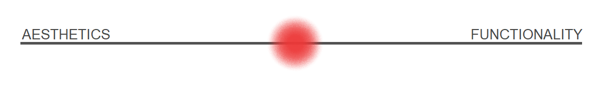

The importance of design of our world
Design is not just what it looks like and feels like. Design is how it works. — Steve Jobs
Good design is achieved when a balance between functionality and aesthetics exists.
It’s rare.

That is the reason why I am writing this article. To make a noise about the design of the environment that makes our world, as something that I have noticed is lacking and something that can be so much better.
I wrote this post after some experiences of experimentation, exploration, reading books, talking to people and paying attention to the environment and everyday stuff, related to design and creations.
I am not a professional. This is my opinion on the subject and I tried to put it rationally and optimally, which I think I did, based on what people said.
The Problem Of Our World
Everything that is quality means that you started with some imagination. In spite of its flexibility, the many parameters and wild environment, you made it happen in reality. Which fits human needs in its balanced way.
A lot of energy is needed for building the well-designed thing.
It makes sense why we don’t have many well-designed things.
Usually, design around us can be explained in two ways:
It is not functional enough, but aesthetic. Making it hard for usability, so it’s either like some nice image to look at. Going too much on the left.
It is not aesthetic enough, but functional. Making it so you don’t want to be a part of the experience because it hurts your eyes. Going too much on the right.
In both cases, it doesn’t have the basic and main idea — making your life better.
For example:
There are websites with low contrast typography and small text.
Creators are focusing on the aesthetics and as a result, they sacrifice functionality for it.
Someone who has issues with eyesight can’t use that website, because it’s even hard to read for an average person.
This is a very simple example but we can take this to a much bigger scale, e.g. engineering, medicine, architecture, politics…
The best design is the simplest one that works.
— Albert Einstein
Simplicity is a difficult part of creation that requires experience and fundamental thinking. It is the main property and the result of balanced design.
We live in this “broken” world that requires changes and innovation.
As someone who wants to be a part of making the world a better place I think it is important to have this problem in mind and to do something about it.
Let me explain this problem fundamentally.
Good Design Is On Our Side
The world around us is not biologically designed for us that well.
Design or how things are shaped has a strong impact on our consciousness.
It is about how things look, feel, work… how they affect our mind and how our mind affects our body.
One of the most important facts in design is our evolution.
How we are shaped should tell the environment how to be shaped.
We have lived in specific biomes that have made us into what we are today. Humans or more fundamentally, carbon based lifeforms, evolved into something special with specific senses and specific taste for nice.
Good design is all about — being friendly with our senses.
Everything that is not doing that, isn’t well-designed.
Surely not for us, maybe for some other organisms on another planet.
I like to think about that through the noise that is present in signal transfer.
There is a point A and point B. We want to transfer some electric signal which is tons of directed electrons moving within the conductor.
The environment around the cable and the properties of the cable itself has an impact on the electrons. It deforms the signal and when it gets to the point B, we have something strange that we can’t understand.
So what we do? With some knowledge of physics, chemistry and engineering, we create electrical circuits that “puts” away those unwanted deformations and then when it comes to point B, we have something familiar that we can understand.
Whole technology is based on that concept — changing the nature in the way beneficial to us.
Bad design is not “putting” away unwanted things well enough. Then, nasty deformations exist and make our UX uncomfortable.
I often hear people say:
Just make it work and that’s it.
But that is not enough.
Design is a solution to some problem we are facing and when we don’t make a solution that is good enough, the problem still exists.
Creations are the result of our needs and it should be instructed and therefore shaped by that same needs of our biology that was created throughout too many years of evolution.
You can see the consequences of poor design in everyday life.
Example of that is the average human today who is not that healthy.
Most common types are: obesity, eyeglasses, spine deformity…
When we see someone who is fit, it’s like a miracle for some people.
But, it is just normal, how things are meant to be.
Leonardo da Vinci has made a good point with Vitruvian Man.
It represents the illustration of how normal human should look like.
Our environment has changed, but we have not.
We are fundamentally still in the forest, because evolution is a very slow process, growing linearly, whereas our civilization is growing very fast, exponentially.
Within this complexity and misfortunes of everyday life, we should modify our civilization to better fit ourselves.
There are tons of creations contrary to our nature that we face every day:
the snooze button on the alarm clock: gives us the possibility to go into a deeper dream and with that making it harder for us to wake up
cup handles that are not well-suited for human hand: making it hard to carry
the song that is not going well with the rithm: hurting your ears
low or high contrast: hurting your eyes
There are some creations that I want to emphasize whose idea was good but it went too far in the wrong way. These are social network, social media and TV.
In general companies in those fields are making content that will occupy our attention, because it is beneficial to them to make us use it more — to hack us.
That is the exact opposite of our own evolution and they are paid to do that, which they do very well. Because of that, we are starting to forget what it’s like to go outside, meet people and feel the sunlight, which is much more important than sitting and clicking on the keyboard.
It not only wastes our time but also causes health problems along the way.
Bad design has bad consequences.
It “just works” and that’s enough for people to use it, but no one questions how it works or more importantly how it affects us.
Companies are quiet about it because they are receiving what they want either way.
Things are going too much around money and people are forgetting
the right values.
These are well-designed stuff that I think is going in the right direction:
Linux: a free and open-source software operating system
Thinkpad: durable, boxy designed and multi-functional computers
Tesla: the safest and one of the fastest, clean designed and fully electric cars
OnePlus: low price for good design and high properties smartphones
IKEA: low price, high quality and democratic design of furniture and housewares
Good design is on our side.
It helps us live better lives, not the other way around.
Imagination Of Utopian Future
Design around us has a big part of our world and therefore our future.
It won’t be nice to end up in some cyberpunk world.
Or even worse, post-apocalyptic world.
When something is created, it changes the environment around us.
More precisely, we get the materials from nature, use it to create something and then that creation interacts with abiotic factors which affect the environment where we live and therefore us.
It is important to be careful about that.
This does not apply to everything e.g. lamp, bottle…
It applies mostly to bigger things e.g. buildings, factories…
In that case, don’t just think about creating things that are beneficial to us, but for the environment too.
There are some disciplines working on that:
ecological design
arcology
sustainable architecture
ecological engineering
It is a healthy relationship between design and nature.
Nature is our primitive home. True is that it has different psychological effects than a modern city. We feel differently when we are in the forest.
Also, renewable energy as an important field for fighting too many concentrations of carbon dioxide in the atmosphere.
That is a sign of bad design too.
Climate change is a terrible problem, and it absolutely needs to be solved. It deserves to be a huge priority.
— Bill Gates
What about artificial intelligence?
It is a great tool for making our world even better and more interesting.
For design that we can’t imagine. Working together with the AI and some other stuff like generative design, additive manufacturing, we can create something beautiful and efficient.
The balanced design.
It looks organic.
There are many new potential tools and methods for creating our new exciting future.
We just need to explore a little and start using them.
What will happen when we become multiplanetary species? How will it affect design and how things on other planets, different environments, would be designed? I am very enthusiastic about all that.
There are other exciting stuff that changes the way we live, e.g. genetic modification, robotics, bionics, cybernetics…
But it is a story for another time.
What about drones doing some transportation and agricultural stuff?
We don’t see that often.
What about more of growing plants more efficiently — hydroponics?
With all this stuff summed up together, I can imagine the bright future. Full of happiness, freshness and clearness.
In my head there is a hill where humans are doing their stuff and technology is running in the background doing hard and boring work for them while they are living as never before.
Even if it is maybe an optimistic image and very hard mission, it’s worth trying.
At least it will give us something better.
It is hard to predict what will happen and where we will end up. But we can make an impact on the direction of our road and therefore higher the chances of making real values.
Design is a very important factor in all that.
It inspires us, makes us wanna live and has a big part of our world.
We, together, need to fix this world.
For the brighter and more exciting future — utopia.
“I’m not trying to be anyone’s savior. I’m just trying to think about the future and not be sad.” — Elon Musk